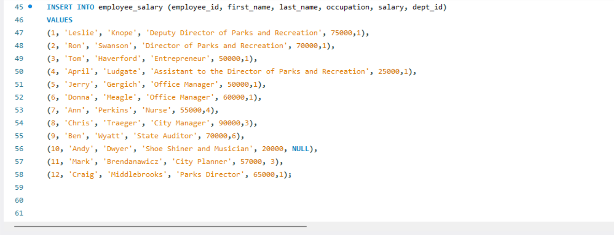

Data Cleaning In SQL
In this project we take raw housing data and transform it in SQL Server to make it more usable for analysis.

I am a Data Analyst and Computer Science/Statistics graduate from the University of Nigeria, Nsukka, dedicated to turning raw datasets into actionable business decisions. Specialized in engineering data pipelines with Python and SQL, and building interactive business intelligence dashboards in Power BI @nigidev
In this project we take raw housing data and transform it in SQL Server to make it more usable for analysis.


Analyzed 500,000+ transactional records to identify cancellation drivers and purchasing behaviors. Technical Workflow: Handled data cleaning/engineering via Python/Pandas and built Power BI dashboards tracking core revenue and cancellation KPIs. Key Business Takeaways: Uncovered revenue leakage from cancellations and proposed operational inventory threshold alerts.